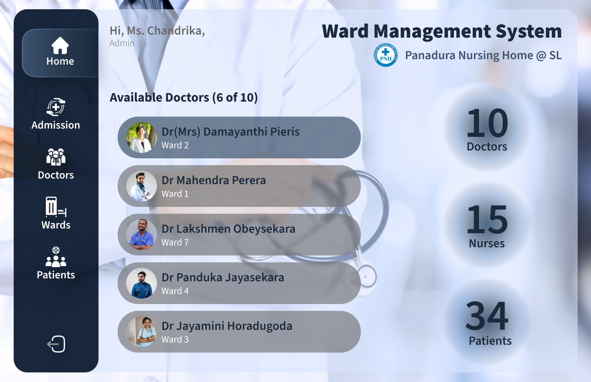

Ward Management System Web Application
Developed a modern and efficient Web Application for the Ward Management System of a Sri Lankan Hospital. The design incorporates Glasmorphism and various UI techniques to enhance user experience. Emphasis is placed on minimalism, fostering intuitive interactions for a seamless experience.

UI Techniques
-
Minimalization
-
Limited Color Palette
-
Visual Hierarchy
-
Glasmorphism
Fostered intuitive interactions through a clear and simplified navigation system. Utilized minimalistic design principles for a clean and uncluttered interface. Clear call-to-action buttons and a strong visual hierarchy to guide users effectively.
Employed a limited color palette, predominantly featuring blue color shades for a cohesive and calming design. Consistent use of color for various elements to maintain a unified and visually pleasing aesthetic.
Established a strong visual hierarchy to prioritize important elements and guide users through the application seamlessly. Emphasis on key functionalities through the use of color, size, and placement.
Incorporated Glasmorphism design elements for a contemporary and transparent look. Glass-like overlays and subtle shadows to add depth and a modern touch to the UI.
Ward Management System Sections (Prototyped)
- Login
- Home/Dashboard
- Admission